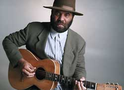

Otis Taylor

Сердце блюзового фольклора лежит в музыке Отиса Тэйлора, давно признанного "голосом" американской блюзовой истории.Его мощь как музыканта, заключается не только в исключительном композиторском таланте, но и в мастерстве владения такими инструментами, как банджо и гитара. Лучшие песни Тэйлора берут свои истоки в афро-американской культуре, однако, по своей сути, они универсальны, так как рассказывают об общих проблемах: бедности, гордости, любви и борьбе за справедливость.
Родившийся в Чикаго в 1948 году, блюзмен Отис Тэйлор совсем не случайно оказался на фолк/блюзовой сцене. Еще в детстве, а рос он в Денвере (Колорадо) в 50-х годах, его любимым местом был местный фольклорный центр. Именно там он познакомился со своим первым струнным инструментов - окулеле (ukelele). Там же научился играть на гитаре и губной гармошке. В 14 лет Тэйлор собрал свой первый состав, который получил очень длинное название “Butter-Scotch Fire Department Blues Band” и вскоре стал довольно часто выступать с различными концертами, играя на банджо или на гармошке. В дальнейшем он переименовал его в Otis Taylor Blues Band.
Свой 20-й день рождения в 1969 году Отис отметил в британской столице, где работал по контракту с Blue Horizon Records. Но он не был слишком доволен тем, как лейбл продвигает его музыку. Поэтому, довольно скоро Тэйлор возвращается в США. По возвращении в Колорадо, Отис подписал контракт с T&O Short Line, и сыграл серию концертов с известными местными музыкантами Tommy Bolin и Eddie Turner. Последний так и остался с Отисом, он играет в его коллективе до сих пор.
А в 1977 году он совсем ушел из музыкального бизнеса (слишком устал от рок-н-ролльного стиля жизни). Отис подался в продавцы антиквариата. И, несмотря на наступивший в его жизни покой и умиротворение, он по прежнему не мог избавиться от музыкального “жучка”, который не переставал “грызть” его. Поэтому, иногда он все же сочинял разные блюзы и пел их близким друзьям “исключительно ради собственного удовольствия”…
Но все эти годы его музыкальный наставник Отиса Кенни Пасарелли (Kenny Pasarelli), не переставал уговаривать музыканта не бросать блюз. Пассарели, клавишник и басист, хорошо известный в 70-х и 80-х годах, когда он много ездил и записывался в качестве сессионного музыканта с большими именам в поп-музыке (Joe Walsh, Elton John, Hall & Oates, Dan Fogelberg, Stephen Stills, Crosby, Stills and Nash), вспоминал о том периоде: "Я знал Отиса с тех пор, когда мне было 16. Когда он увлекся антиквариатом, я купил у него массу хороших вещей - мебель и прочее, а потом, мы всегда собирались вместе и джемовали, когда я оказывался в городе".
Одна такая оказия подвернулась в середине 90-х, когда Пассарелли пригласил Тэйлора принять участия в импровизированной сессии и поддержать великого теннисиста Джона Макинроя (John McEnroy), который, как выяснилось, очень любит играть на гитаре в перерывах между теннисными баталиями. Потом было несколько концертов "на троих" - Тэйлор, Пассарелли и Тернер - без барабанщика. "Мы пробовали играть с разными барабанщиками, но потом поняли, что мы без ударных мы, почему-то, звучим лучше.
В 1995 году Тэйлор решил вернуться на сцену и с тех пор успел выпустить уже три альбома: “Blue-Eyed Monster”; расхваленный критиками на все лады, диск “When Negroes Walked On Earth” и последний, самый свежий альбом- White African, который вышел в 2000 году.
Real Blues Magazine написал об этом альбоме следующее: “Эта глубокая музыка, вышла из рук гениального исполнителя , который воспринимает афро-американское культурное наследие очень серьезно. Блюзы Отиса Тэйлора не только развлекают и доставляют вам удовольствие, но многому учат. Их можно рассматривать как послания, "упакованные" в запоминающуюся мелодичную упаковку”.
Thirsty Ear Magazine написал об альбоме White African следующее: “Это один из наиболее оригинальных и глубоких блюзовых коллективов. Композиции Тэйлора можно сравнить с извилистым путем, ведущим в эмоциональную природу каждой песни. И эта эмоциональность необычайно освежает в конечном результате. Альбом “White African” хорош настолько, насколько хорош стал сам блюз за последние годы".
“Судя по всему, дэнверский блюзмен записал лучшую блюзовую пластинку года. Его группа сделала оригинальный звук, который в наши дни практически уже и не встретишь. Он основан на медленном, глубоком “груве”. “White African - его первый, действительно великий альбом”, - отметил в своей рецензии Albuquerque Joutnal.
Бэк-вокал на нескольких трэках на этом альбоме записала 13-летняя дочь Отиса- Кэйси (Cassie). Некоторые из номеров на White African звучат так, как будто Jonh и Alan Lomax записали это годах в 20-30-х, во времена их поиска "чистого блюзового саунда". Однако Тэйлор написал все 11 вещей этого альбома сам.
"Я начал играть фолк и блюграсс (Bluegass) на банджо, - вспоминает Олис Тэйлор. - Но в 1964 году людей на юге все еще продолжали периодически линчевать, и я подумал: "Почему я играю музыку людей, которые меня ненавидят?" И с тех пор я стал играть блюз на гармошке и гитаре. И не прикасался к банджо вплоть до 1990 года, пока не выяснил, что банджо пришло к нам из Африки. Представляете как грустно! Я даже не знал, что это инструмент моего народа!"
На своем последнем альбоме White African, Тэйлор играет на гитаре как на банджо, настраивает банджо как гитару, и таким образом играет и поет акустические блюзы. "Однажды я немножко изменил строй своего банджо, и попробовал сыграть на нем как на гитаре. И получилось очень здорово".
"Конечно, я слушал всех этих парней, которые играли блюз, но не слишком часто. Во-первых, когда я был молодым, у меня не было магнитофона; во-вторых, я всегда хотел быть оригинальным. Некоторые мои друзья целыми днями слушали блюзовую "классику", так до сих пор и играют, как все остальные.
В 1996 году Тэйлор открыл свою собственную компанию Shoelace Music, где и выпустил спродюсированный Пассарелли диск Blue-Eyed Monster. "Я не хочу много говорить о том, что я хочу сделать. Я не помышляю об уровне Боба Дилана, но мне кажется, что мои строчки тоже задевают слушателя. Я лаконичен, а это - тоже талант. В трех - четырех словах можно обрисовать всю картину. И я знаю, что могу сделать это и ОДНИМ словом. Правда, я не уверен, что оно сработает и его поймут все", - смеется Тэйлор.